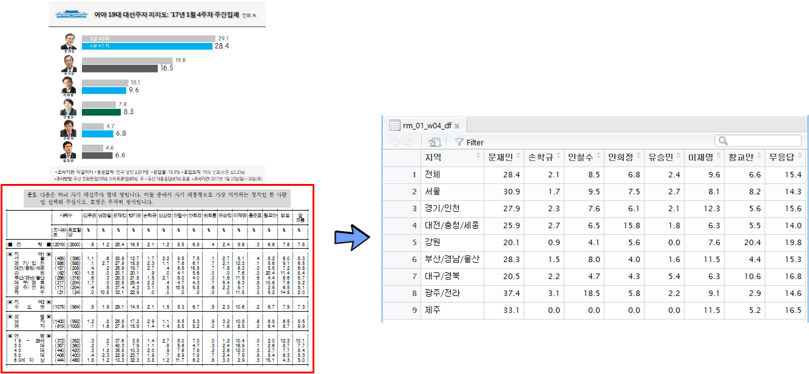

데이터 과학자와 함께 하는 제19대 대통령 선거
대선후보 지역별 지지율 - PDF 파일
1. 여론조사기관 PDF 파일
리얼미터에서 발간하는 PDF 파일을 파싱하여 대선후보 지지율을 시각화한다. 우리나라에서는 상당수 정보가 웹과 인터넷이 보급되었음에도 불구하고 여전히 PC 패러다임을 벗어나지 못해 PDF, HWP, ODCX 등 파일형태로 데이터를 제공하는 기관이 상당수 있다.
따라서, 통계, 데이터과학, 기계학습에 필요한 데이터를 파일형태로 받아 파일에서 텍스트를 추출하고 이를 가공하여 데이터 분석에 사용하는 과정을 거친다.

리얼미터 주간 여론조사 웹사이트에서 PDF 파일을 다운로드 받아 디렉토리에 저장한다.
# 0. 환경설정 -----------------------------------------------
library(pdftools)
library(tidyverse)
library(stringr)
library(lubridate)
library(testthat)
library(ggthemes)
library(extrafont)
loadfonts()2. PDF 파일 內 표를 데이터프레임으로 변환
PDF 파일 內 표를 데이터프레임으로 변환하는 과정을 통해 데이터 분석을 위한 준비를 한다.
- PDF 파일에서 텍스트 추출:
pdftools팩키지 사용 - 추출된 텍스트 정제: SPSS 출력물 표를 R 데이터프레임으로 변환하기 위한 전처리 과정을 거쳐 데이터 정제
- 리스트 자료형 표를 데이터프레임으로 변환
pdf_text() 함수를 사용해서 PDF 파일에서 테스트를 추출한다. 자체 개발한 rm_jan_fun()를 통해 해당주차 지지율 데이터프레임을 생성시킨다. testthat 팩키지 단위 테스트 함수 test_that()을 사용해서 PDF 지역별 후보 지지율값이 제대로 추출되어 변환되었는지 검정한다. write_csv() 함수를 통해 결과값을 저장한다.
## 리얼미터 1월 추출 함수 ------------------------------------------------------------------
rm_jan_fun <- function(list_dat) {
person <- unlist(strsplit(list_dat[6], split = "\\r\\n"))
person <- str_replace_all(person, "\\s", "")
support <- strsplit(person[c(6,12,15:22)], split = "\\|")
support[[1]] <- append("V1", support[[1]])
support_df <- do.call(rbind, support) %>% as_tibble()
support_df[1,2:3] <- c("V2", "V3")
names(support_df) <- support_df[1,]
support_df <- support_df %>% dplyr::select(-V1) %>%
dplyr::filter(V2 != "V2")
support_df <- support_df %>% dplyr::rename("지역"=V2, "조사완료"=V3, "목표할당" = 사례수) %>%
mutate(조사완료 = str_replace_all(조사완료, "\\(|\\)", ""),
목표할당 = str_replace_all(목표할당, "\\(|\\)", ""),
지역 = str_replace_all(지역, "\\s|■", "")) %>%
mutate_at(grep("지역",colnames(.), invert=TRUE),funs(as.numeric)) %>%
mutate(무응답=없음+잘) %>%
dplyr::select(지역, 문재인, 손학규, 안철수, 안희정, 유승민, 이재명, 황교안, 무응답)
return(support_df)
}
# 1. 데이터 생성 ---------------------------------------------------------------------------------------
## 1.1. 1월 데이터 추출---------------------------------------------------------------------------------
# realmeter_w170130212.pdf : 1월23~26, 발표: 1월 26일
rm1701_w4 <- pdf_text("03.data/realmeter_w170130212.pdf")
## 1.2. PDF파일을 데이터프레임 변환---------------------------------------------------------------------------------
# realmeter_w170130212.pdf : 1월23~26, 발표: 1월 26일
rm_01_w04_df <- rm_jan_fun(rm1701_w4)
## 1.3. 단위테스트를 통한 데이터변환 검증---------------------------------------------------------------------------------
test_that("리얼미터 1월 4주차",{
expect_equivalent(rm_01_w04_df %>% slice(1) %>% collect %>% .[["문재인"]], 28.4)
expect_equivalent(rm_01_w04_df %>% slice(1) %>% collect %>% .[["안철수"]], 8.5)
expect_equivalent(rm_01_w04_df %>% slice(1) %>% collect %>% .[["손학규"]], 2.1)
})
## 1.4. 데이터 내보내기---------------------------------------------------------------------------------
write_csv(rm_01_w04_df, "rm_jan_w04.csv")3. 지역별 지지율 데이터 시각화
리얼미터 주차별 보고서 PDF 파일에서 지역별 후보 지지율을 추출한 데이터를 불러들여 데이터 정제과정을 거쳐 시각화한다.
# 1. 지지도 데이터 불러오기 -----------------------------------------------
rm_jan_w04_df <- read_csv("data/rm_jan_w04.csv") %>% mutate(sdate = ymd("2017-01-26"))Parsed with column specification:
cols(
지역 = col_character(),
문재인 = col_double(),
손학규 = col_double(),
안철수 = col_double(),
안희정 = col_double(),
유승민 = col_double(),
이재명 = col_double(),
황교안 = col_double(),
무응답 = col_double()
)
rm_feb_w01_df <- read_csv("data/rm_feb_w01.csv") %>% mutate(sdate = ymd("2017-02-03"))Parsed with column specification:
cols(
지역 = col_character(),
문재인 = col_double(),
손학규 = col_double(),
안철수 = col_double(),
안희정 = col_double(),
유승민 = col_double(),
이재명 = col_double(),
황교안 = col_double(),
무응답 = col_double()
)
rm_feb_w02_df <- read_csv("data/rm_feb_w02.csv") %>% mutate(sdate = ymd("2017-02-08"))Parsed with column specification:
cols(
지역 = col_character(),
문재인 = col_double(),
손학규 = col_double(),
안철수 = col_double(),
안희정 = col_double(),
유승민 = col_double(),
이재명 = col_double(),
황교안 = col_double(),
무응답 = col_double()
)
# 2. 데이터 정제 -----------------------------------------------
rm17_df <- rm_jan_w04_df %>% bind_rows(rm_feb_w01_df) %>%
bind_rows(rm_feb_w02_df) %>% dplyr::select(-유승민, - 무응답, - 이재명) %>%
mutate(지역 = factor(지역, levels=c("전체", "서울", "경기/인천", "광주/전라", "대전/충청/세종", "대구/경북", "부산/경남/울산",
"강원", "제주")))
rm17_df_lng <- rm17_df %>% gather(후보, 지지율, -지역, -sdate)
# 3. 데이터 시각화 -----------------------------------------------
ggplot(rm17_df_lng, aes(x=sdate, y=지지율, group=후보, color=후보)) +
geom_line(size=0.8) +
geom_point(size=2) +
facet_wrap(~지역) +
scale_y_continuous(limits=c(0,53)) +
theme_tufte(base_family="NanumGothic") +
theme(legend.position="top",
plot.caption=element_text(hjust=0,size=10),
plot.subtitle=element_text(face="italic"),
text=element_text(family="NanumGothic"),
axis.text=element_text(size=7.5),
axis.text.x = element_text(angle = 00, hjust = 1, size=9),
strip.text.x = element_text(size = 10))+
labs(x="",y="",title="리얼미터 지역별 대선후보 지지율",
caption="\n 지지율 여론조사 : 리얼미터 1월 4주, 2월1주, 2월2주",
subtitle="",
fill="")